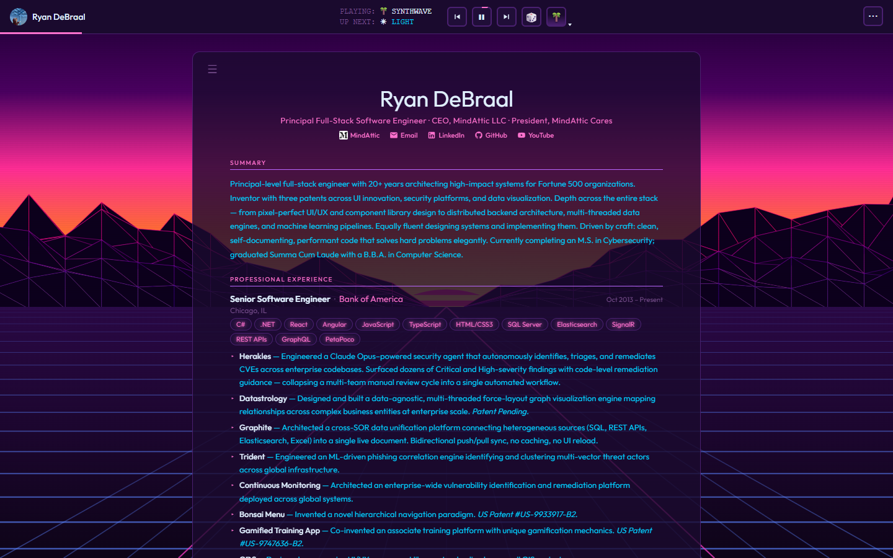
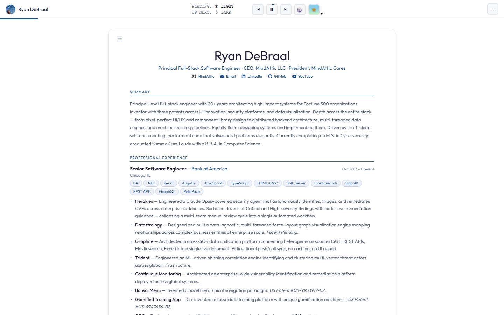
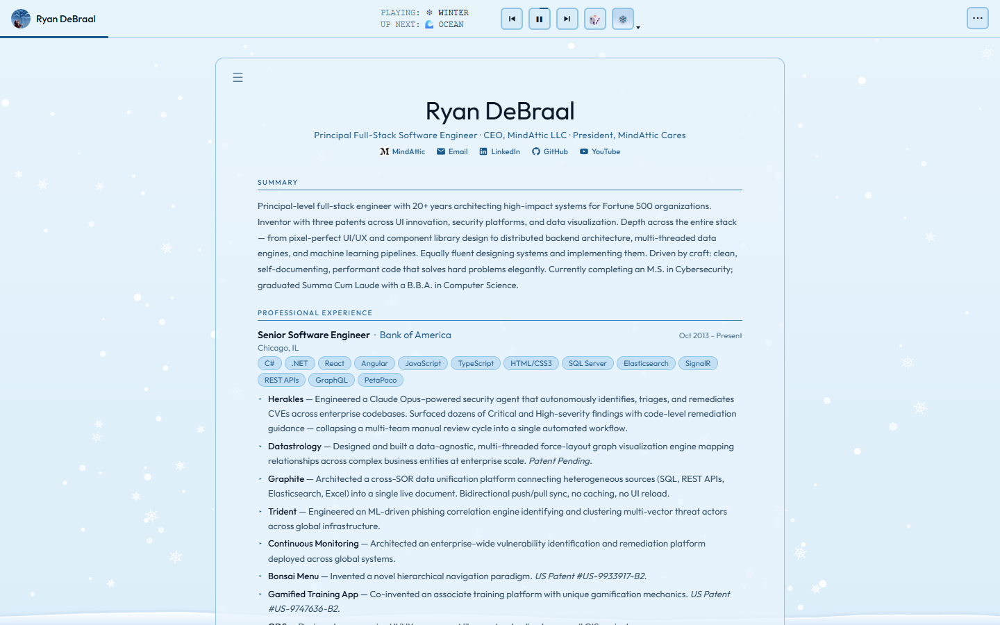

ryandebraal.com
A resume that is its own work sample: one hand-authored HTML page with 16 animated themes, 3 profiles, hover tooltips for 447 technologies, and Markdown, HTML and PDF export, with no build step.

Try it: ryandebraal.com
Why
- A resume that proves the claims on it. Every animation frame and export pipeline is in the file you can read end to end in an afternoon.
- One set of content, three audiences. Switch between a classic, a pitch and a complete view of the same data with one click.
- Take it with you in the format the reader wants: Markdown, standalone HTML, PDF or a print layout, straight from the toolbar.
- Nothing between you and the page. The file you edit is byte for byte the file the browser runs: no bundler, no framework, no
npm install. - No tracking. Open the Network tab and you see the page, its fonts, images and theme art from
cdn.jsdelivr.net, and html2pdf.js only when you export a PDF.
Features

Themes
- 16 themes: Light, Dark, Spring, Summer, Autumn, Winter, Matrix, Neko, Ocean, Sunset, Forest, Cyberpunk, Noir, Sakura, Sand and Synthwave.
- Theme switching is CSS custom properties only, never a JavaScript style mutation (RDC-LAW-4).
- A theme player in the toolbar shows what is playing and what is up next, and rotates through themes until you pause it.
- Custom Canvas 2D animations per theme, written from scratch with no animation library: bees with a flower-claiming state machine, snow that settles into SVG drifts, ten roaming Neko cats with the full 1998 sprite state machine (all 32 frames kept inline as tiny base64 CSS classes), sandstorm physics, parallax forest silhouettes, a perspective synthwave grid, neon acid-rain cyberpunk skylines and more.
light,darkandnoirare static CSS-only themes with no bespoke effects.- An adaptive quality step (
fx-quality-level) scales the effects back on slower machines.

Profiles
- Three rendering profiles,
classic,pitchandcomplete, each a different view of the same resume data. render()reprojects the one data object for the chosen audience (RDC-LAW-5).
Tech tooltips
- Hover any technology tag in the skills or experience sections for a short description and where it was used.
- 447 entries live in one
tooltipsobject. - Skill tags have a per-skill familiarity level you can cycle; it is remembered.
Export
- Markdown (
exportMD), standalone HTML (exportHTML) and PDF (exportPDF). - Print layouts:
exportPrintPage,exportPrintDocument,exportPrintCVandprintResume. - PDF export loads html2pdf.js 0.10.2 from jsDelivr on first use only.
Everything else
- The Outfit typeface from the CDN: weights 100 to 900 as two woff2 subsets (latin and latin-ext) hosted in MindAttic.UiUx and served by jsDelivr at a pinned tag. The latin file is preloaded. No Google Fonts request.
- Preferences persist in
localStorage: theme, profile, font choice, theme timeout and transition, and per-skill familiarity. - A mobile-first toolbar that adapts between desktop and portrait orientations.
- A DevTools easter egg: an ASCII banner printed to the console.
Quick start
You need a modern browser and a network connection (fonts, portrait and theme art load from jsDelivr).
git clone https://github.com/mindattic/ryandebraal.com
cd ryandebraal.com
start index.htmThat's it. There is no dev server, because there is nothing to compile. You should see the resume with the theme player running in the toolbar. Use the player buttons to step through themes; profiles, settings and export are in the toolbar menus.
How it works
index.htm is a single hand-authored page (about 7,000 lines, about 0.45 MB on disk). Fonts, the portrait, the theme backgrounds and the PDF library are no longer embedded; they load from jsDelivr (RDC-A3), which is why it dropped from about 5.3 MB.
index.htm (one page)
├── <!-- Last Updated: <UTC> --> stamped by the deploy pipeline (MindAttic.Deploy)
├── <head>
│ ├── DevTools easter-egg banner (ASCII, shown via console.log)
│ └── <style>
│ ├── CSS custom properties per [data-theme]
│ ├── layout + toolbar rules
│ └── @font-face Outfit (CDN woff2, weights 100-900) + Neko 32 inline frames
├── <body data-theme=… data-profile=…>
│ ├── resume DOM mount + toolbar
│ ├── per-theme <canvas> FX layers
│ └── <script> one IIFE-scoped global block
│ ├── § DATA const D = {…} (the resume content)
│ ├── § TOOLTIPS const tooltips = {…} (447 tech entries)
│ ├── § RENDER secHTML / expHTML / projHTML / eduHTML / patHTML / corpHTML /
│ │ skillsHTML / tag / buildTooltip / render() (pure string builders)
│ ├── § STATE setTheme / setProfile / cycleTheme / pickTheme / cycleProfile /
│ │ filterSkills / cycleTagLevel / saveSkillFam / resetDefaults /
│ │ startThemeRotation / stopThemeRotation / toggleThemeRotation
│ ├── § FX ENGINE one start<Theme>() Canvas 2D initializer per animated theme,
│ │ driven by requestAnimationFrame; resizeCanvas / stopFX manage lifecycle
│ └── § EXPORT exportMD() · exportHTML() · runPdfExport(opts) with named wrappers
│ exportPDF() / exportPrintPage() / exportPrintDocument() /
│ exportPrintCV() · printResume() · toggleExportMenu / toggleMoreMenuThis mirrors docs/BIBLE.md §4, the canonical version of this diagram. If the architecture changes, update that file first, then this section.
Content model
All resume content lives once, as a single in-file JavaScript object literal named D (index.htm, near line 1592). Every profile and export format is a read-only projection of this one object; there is never a second copy of the content.
| Key | What it holds |
|---|---|
summary, pitchSummary |
Prose blurbs (full and pitch tone) |
skillsCore, skillsComplete |
Grouped skill lists (label and items[]) |
experience[] |
Title, company, location, dates, tech[] and bullets[] per role |
projects[] |
Name, URL and label per link: currently the MindAttic GitHub organisation and MindAttic books on Amazon |
education[] |
Degrees |
patents[] |
US patents |
corporate[] |
Registered entities |
A sibling object, tooltips (index.htm, lines 977 to 1463), maps 447 technology names to hover descriptions.
Themes and profiles reference
- Theme names:
light,dark,spring,summer,autumn,winter,matrix,neko,ocean,sunset,forest,cyberpunk,noir,sakura,sand,synthwave. Selected with the[data-theme]attribute on<html>. - Profile names:
classic,pitch,complete. Selected with[data-profile]on<body>. localStoragekeys:resume-settings(all Settings-panel values, including theme timeout and transition),resume-theme,tag-familiarity,neko-colorandfx-quality-level. Theme-rotation pause lasts for one visit and is not saved.
Assets and CDN
Static assets live in the sibling MindAttic.UiUx repo and are served by jsDelivr at a whole-number tag. The page currently pins V9.
- Page art:
https://cdn.jsdelivr.net/gh/mindattic/MindAttic.UiUx@V9/ryandebraal.com/<category>/<file>(themes/<name>/<name>-NN.jpg,images/,icons/). - Shared fonts:
https://cdn.jsdelivr.net/gh/mindattic/MindAttic.UiUx@V9/fonts/outfit/outfit-latin.woff2(andoutfit-latin-ext.woff2). - PDF export: html2pdf.js 0.10.2 from jsDelivr npm, loaded on first export.
Names are lowercase kebab-case; JPEGs are never re-encoded. To add or change an asset:
- Put it in MindAttic.UiUx under
ryandebraal.com/<category>/. - Regenerate its
assets-manifest.jsonwithtools\build-asset-manifest.ps1in that repo, and commit. - Run the linked
/deploy: it tags the next whole-number release, pushes it, rewrites the@V<n>pins inindex.htmand checks the CDN before uploading.
Full conventions: docs/BIBLE.md §10.
Not in this repo
No node_modules. No package.json. No webpack.config.js. No tsconfig.json. No .eslintrc. No CI matrix. No Tailwind. No React. No Vite. No analytics SDK. No tracking pixels. No service worker. No polyfills. No minifier. No transpiler. No third-party fonts. Assets come only from the pinned jsDelivr paths allowed by RDC-A3. No test suite, no compiler, no build command (see docs/BIBLE.md §3).
The retired per-project deploy.ps1, deploy.bat and settings.json must not be reintroduced: deploy is centralised in the sibling MindAttic.Deploy repo (RDC-LAW-6).
Project layout
ryandebraal.com/
├── index.htm The entire hand-authored page (assets are hosted in MindAttic.UiUx)
├── README.md This file
├── README.htm Generated from README.md by tools/build-readme.ps1
├── AGENTS.md Project agent entrypoint
├── CLAUDE.md Provider forwarder to the MindAttic agent standard
├── docs/
│ ├── BIBLE.md L0: what the site is and is not, architecture, the Laws (RDC-LAW-n)
│ ├── AMENDMENTS.md L1: append-only change log (RDC-A<n>)
│ ├── USER_STORIES.md L2: capabilities and status (RDC-US-<Epic><n>)
│ ├── BIBLE.digest.md GENERATED by tools/codex.ps1 digest, never hand-edited
│ ├── images/ README screenshots
│ └── rfc/
│ └── 0001-in-browser-smoke-harness.md
├── tools/
│ ├── codex.ps1 Codex doctor and digest tool
│ └── build-readme.ps1 Regenerates README.htm (thin wrapper, see below)
└── .claude/
├── settings.json, settings.local.json, launch.json, statusline.ps1
├── commands/ deploy.md, quicksave.md, quickload.md
├── hooks/ inject-digest.ps1, quickload-on-do.ps1
└── skills/ commit/, deploy/, discard/, revert/, run/ (each a SKILL.md)Tooling
| Script | Purpose |
|---|---|
tools/codex.ps1 |
Codex CLI for this repo. doctor validates the docs/ canon (front-matter, IDs, cross-references, cited tests and paths, digest freshness) and exits non-zero on any hard error. digest regenerates docs/BIBLE.digest.md from BIBLE §1, §3, §5 and §9 plus a status index and the latest amendment head. Pure Windows PowerShell 5.1, no external modules. |
tools/build-readme.ps1 |
Thin wrapper that regenerates README.htm from README.md by delegating to the shared engine at ../codex-standard/build-readme.ps1 (workspace root, outside this repo). Every MindAttic repo carries an identical wrapper, so all README.htm files share one engine. |
powershell -NoProfile -ExecutionPolicy Bypass -File tools\codex.ps1 doctor
powershell -NoProfile -ExecutionPolicy Bypass -File tools\codex.ps1 digest
powershell -NoProfile -ExecutionPolicy Bypass -File tools\build-readme.ps1doctor must exit 0 after any change under docs/. README.htm is a generated, developer-facing rendering of this file and is unrelated to the site's index.htm, which is the shipped product.
Deployment
Deploy with the /deploy command (.claude/commands/deploy.md), which shells out to the sibling MindAttic.Deploy repo. This site is part of the permanently linked group mindattic-web (MindAttic.UiUx, ryandebraal.com, mindatticcares.com and mindattic.com): deploying any one of them deploys all four, in one run.
powershell -NoProfile -ExecutionPolicy Bypass -Command "cd D:\Projects\MindAttic\MindAttic.Deploy; npm run deploy -- --site ryandebraal.com"The run:
- Publishes the MindAttic.UiUx package first (tags the next
V<n>if it has unreleased commits and pushes the tag). - Pins that tag in every site's
index.htm. - Verifies every asset is live on jsDelivr, byte for byte.
- Only then stamps the
Last Updatedcomment and FTPS-uploadsindex.htmto the site root, followed by mindatticcares.com and mindattic.com.
--dry-run previews the whole run without changing anything; --no-link deploys this site alone. The deploy never commits or pushes this repo. This site's profile lives in MindAttic.Deploy/projects.json under sites[]; FTP credentials are centralised in MindAttic.Deploy.
Limitations
- No automated test suite yet. Every user story is held at "shipped, manually verified" because this project has no build step by design (RDC-LAW-2).
- RFC 0001 proposes a dependency-free in-browser smoke harness (an in-page
?selftest=1block, or a sibling harness in MindAttic.Deploy). It is planned, not built.
Documentation
This repo follows the MindAttic Codex documentation standard (project code RDC). A fact lives in exactly one layer; deeper detail is linked by stable ID, never duplicated here.
- docs/BIBLE.md (L0): what the site is and is not, the architecture (§4) and the project Laws
RDC-LAW-1toRDC-LAW-6. - docs/AMENDMENTS.md (L1): append-only change log. An amendment wins over the bible; it is never rewritten, only superseded.
docs/USER_STORIES.md(L2): capabilities by epic, each with its verification status.- docs/rfc: design notes that graduate into the bible and stories once decided.
- docs/BIBLE.digest.md: generated by
tools/codex.ps1 digest. Never hand-edit it. - Org-wide laws: MindAttic.HouseRules.md, inherited by reference from BIBLE §5 (whole-number versioning, credentials never in code or commits, "done is verified, not asserted").
- Agent instructions: AGENTS.md is the project's agent entrypoint.
CLAUDE.mdis a provider forwarder to the workspace-wideMINDATTIC_AGENT.mdandmindattic-agent-standard/AGENTS.md; neither duplicates workflow. The.claude/folder holds the Claude Code commands, hooks, skills and status line listed in Project layout.
License
This repo has no LICENSE file. All rights reserved. Built and maintained by Ryan DeBraal.
Part of MindAttic — see more projects at github.com/mindattic. Related: mindattic.com, mindatticcares.com, MindAttic.UiUx, MindAttic.Deploy.